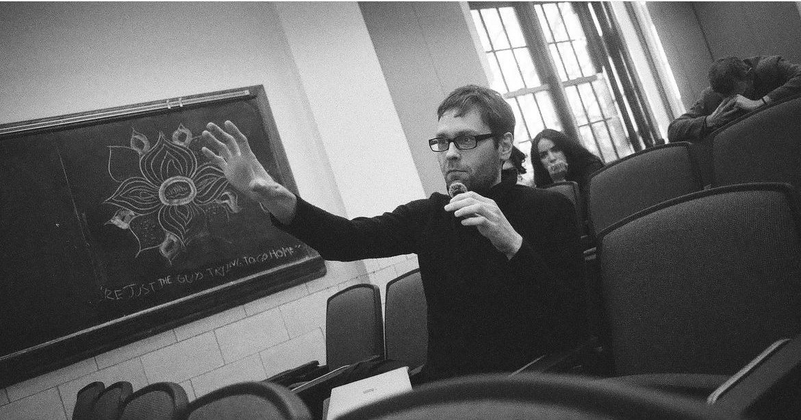

Action, mind, and the body
My work sits at the intersection of the philosophy of action, philosophy of mind, and phenomenology — asking how our embodiment and our embeddedness in the world shapes the way we think, act, and live.

Areas
Metaphysics (with a focus on Philosophy of Action and Philosophy of Mind)
Ethics · History of Western Philosophy · Philosophy of Language
Specific Research Interests
Causal Theories of Action
A red thread running through my philosophical work is a critical attitude toward any causal theory of action. In several early papers, I argued against the residual Cartesian assumption — still present in philosophy and the cognitive sciences — that the will to act is an event causing the body to move. More recently, I've been developing arguments against contemporary agent-causalist claims according to which the agent herself is the cause of her own action. Acting and willing, I think, cannot be pried apart — and neither can the agent be pried apart from her body.
Practical Reasoning and Action Explanation
How do agents form intentions and plans? How do they choose their means and relate them to their ends as they act? How do they explain and justify what they did? Based on what do we blame and punish people? This second strand of my work addresses the nature of practical reasoning and practical inference more generally (and ethical reasoning more specifically), including the possibility of truly autotelic agency, as opposed to merely instrumental agency, and truly ‘good’ action.
The Body, the Hand, and the World We Act In
At the center of my current work is the human body, long either misunderstood or ignored by philosophers of action. Drawing on Heidegger, Sartre, Merleau-Ponty, and the contemporary philosophy of embodiment, I defend the view that the body is not an obstacle we act through or a tool we command, but the very subject of agency — with the hand as its primary organ — determining the form of our practical thought and reality. As part of that, I'm also interested in the nature of artificial bodies: machines, robots, and mechanically enhanced human bodies.
Language, History, and What Else?
My interests are very broad; they would require many more boxes. Worth mentioning: there is a growing interest in the linguistics of transitive verbs and what they can tell us about our conception of agent-object interactions. Historically, I am also deeply interested in German Idealism and its often-overlooked ties to early analytic philosophy, as well as the political and philosophical impact of the Vienna Circle.
Works in progress
“Grasping, Using, Dominating. A Heideggerian Account of the Human Hand”
A closer look at the hand's capacities to grasp, hold, and use tools — and at a further question: why Heidegger was so drawn to the human hand, and why technology is at once the hand's offspring and its coffin.
“The Tool of all Tools”
This paper examines the peculiar status of the tool-using hand: not a tool we use, but the very condition of the possibility of tool use itself.
“Bodily Action and Ergative Verbs”
Here, I take aim at a common linguistic argument advanced by agent-causalists in favor of a causal account of bodily action, showing that ergative verb constructions cannot be analyzed in causal terms in any context.
“How the Body Shapes our Practical Reasoning”
In this paper, I argue that the body is not merely the neural basis of our practical thought, nor simply something that occasionally figures as content in the premises and conclusions of our practical reasoning — it also shapes the very form that reasoning takes.
“Hegel on Intention”
A close reading of Hegel's theory of action in the Morality-section of the Philosophy of Right staged against a debate between John McDowell and Robert Pippin on his distinctions between deed and action, and between purpose and intention. I offer a different interpretation: the Morality-section discusses a conflict between the right of subjectivity and the right of objectivity concerning the question of which elements of the realized deed the fully developed moral agent must include as part of her will and take responsibility for.
Translation
Der Logische Fremde [The Logical Alien]
Translator (English → German) and co-editor with James Conant, Johannes Haag, and Christian Barth. Basel/Berlin: Schwabe Verlag.